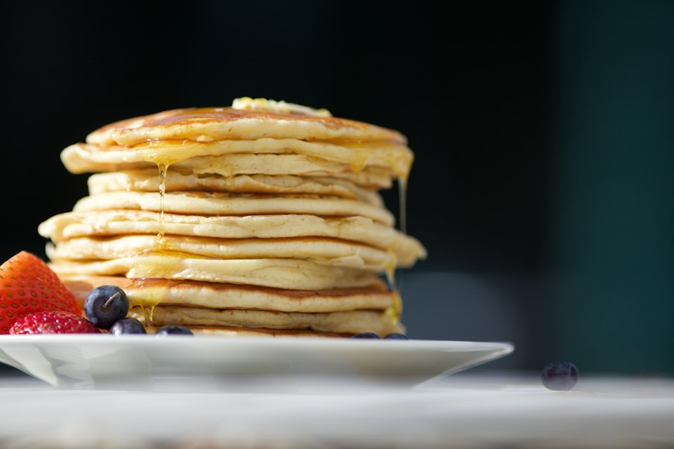

Volver al inicio
Panqueques

Foto de Luke Pennystan en Unsplash.
Descripción
Estos panqueques suaves se preparan con una mezcla sencilla de harina, leche y huevo. Puedes servirlos con fruta, miel o sirope.
Ingredientes
- 1 taza de harina
- 1 cucharada de azúcar
- 2 cucharaditas de polvo de hornear
- 1 pizca de sal
- 1 huevo
- 3/4 de taza de leche
- 2 cucharadas de mantequilla derretida
- Un poco de mantequilla o aceite para la sartén
Pasos
- Mezcla la harina, el azúcar, el polvo de hornear y la sal en un recipiente.
- Bate el huevo con la leche y la mantequilla derretida en otro recipiente.
- Vierte los ingredientes líquidos sobre los secos y mezcla solo hasta integrarlos; pueden quedar algunos grumos pequeños.
- Calienta una sartén a fuego medio y engrásala ligeramente.
- Vierte un poco de mezcla. Cuando aparezcan burbujas en la superficie, dale la vuelta y cocina el otro lado hasta que esté dorado.
- Repite con el resto de la mezcla y sirve los panqueques calientes.